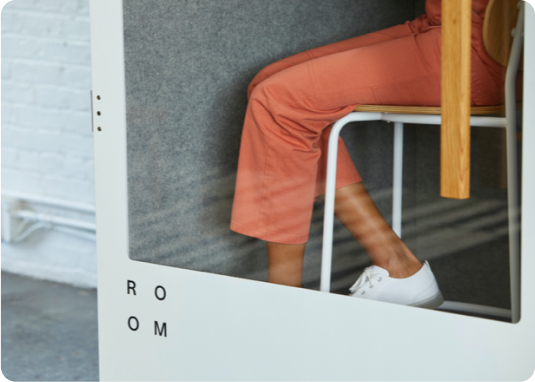
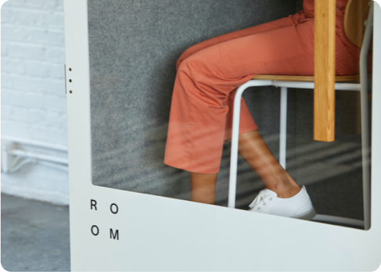

UMG с партнёрами рассказали иностранным гражданам, куда обращаться за решением разных вопросов
Наша организация “Union Madad Group” совместно с АНО Мадад и “Барака Кредит” вышла на одну из центральных улиц Санкт-Петербурга с целью напомнить нашим дорогим соотечественником об их правовой поддержке на территории РФ и рассказала всем гражданам СНГ не только о своей деятельности, задумках, проектах и преимуществах, но и о том что каждому, кто нуждается в нашей помощи – мы протянем руки
“Это пример для цитат например таких как. 5 сентября в Санкт-Петербург прибыла делегация из Узбекистана в составе которой присутствовали”
― Имя Фамилия
5 сентября в Санкт-Петербург прибыла делегация из Узбекистана в составе которой присутствовали работники министерств и ведомств, государственных учреждений и ННО, деятелей искусства и культуры республики Узбекистан Делегация прибыла в Санкт-Петербург с целью проведения и участия в цикле культурно-досуговых и духовно-просветительских мероприятий, посвящённых ко Дню Независимости Узбекистана.
7 сентября в КДЦ «Московский» прошёл грандиозный праздник «День Независимости Узбекистана»

 

Наша организация “Union Madad Group” совместно с АНО Мадад и “Барака Кредит” вышла на одну из центральных улиц Санкт-Петербурга с целью напомнить нашим дорогим соотечественником об их правовой поддержке на территории РФ и рассказала всем гражданам СНГ не только о своей деятельности, задумках, проектах и преимуществах, но и о том что каждому, кто нуждается в нашей помощи – мы протянем руки